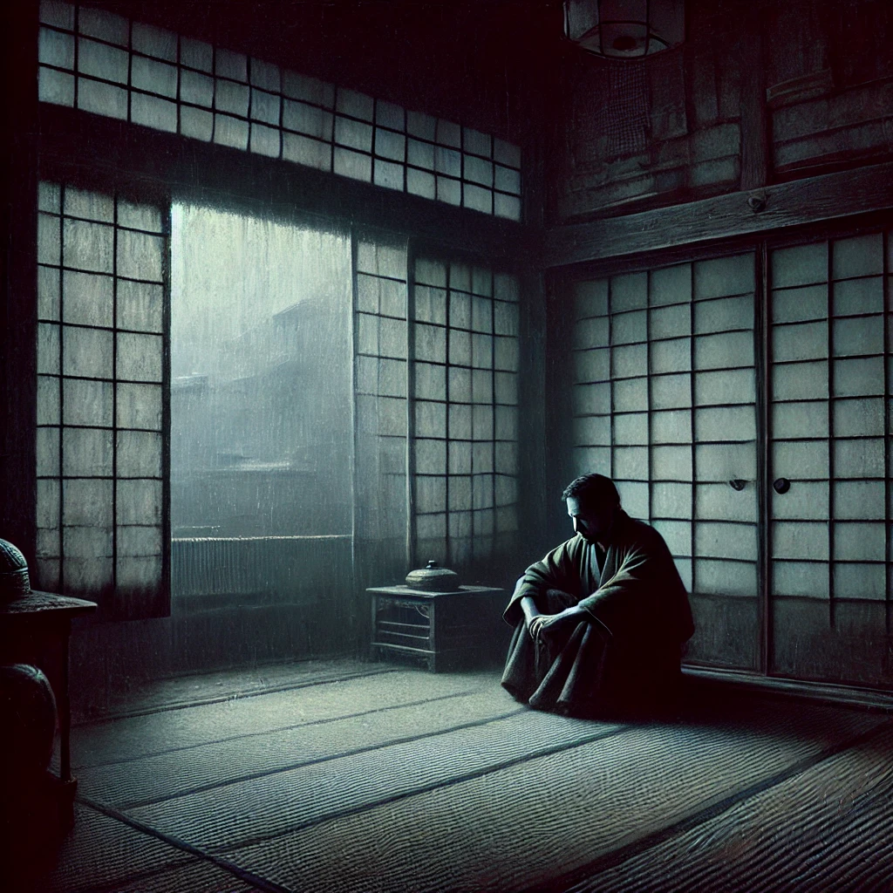

인간 실격
목차
작가
다자이 오사무
출판일
1948년 7월 25일
감상평에 대한 AI그림
여러 번 고민하게 만들고, 다양한 생각을 하게 한 책이었다. 주인공인 ‘요조’의 삶은 비참하고 어두웠지만, 그의 태도와 위선적인 면까지 이해하기는 어려웠다. ‘만약 그가 인간의 본성을 회피하지 않고 수용했다면, 인간관계를 부정적으로만 보지 않았더라면 어땠을까?’라는 생각이 든다. 이 책은 작가인 다자이 오사무의 실제 삶과 닮은 부분이다. 그래서 이 책은 더욱 의미가 깊게 다가온다.

감상평에 대한 AI평가
이 감상평은 다음의 감정을 중심으로 구성되어 있습니다.
✨ 이해의 어려움과 거리감: 주인공 ‘요조’의 비참한 삶과 위선적인 면을 이해하기 어려웠다는 점에서, 인물과의 거리감을 느끼고 있음을 나타냅니다.
✨ 가정과 대안적 사고: ‘만약 그가 인간의 본성을 회피하지 않았다면?’이라는 질문을 통해, 다른 가능성을 상상하며 작품을 더욱 깊이 있게 해석하려는 태도가 보입니다.
✨ 작가와 작품의 연결에서 오는 의미감: 다자이 오사무의 실제 삶과 작품의 유사성을 인식하며, 이를 통해 작품이 더욱 의미 있게 다가왔음을 강조하고 있습니다.
이 감상평은 작품이 던지는 질문을 통해 깊은 고민을 하게 만들며, 주인공과 작가의 삶을 연결하여 더욱 의미 있게 받아들이는 태도를 보여주는 글입니다.